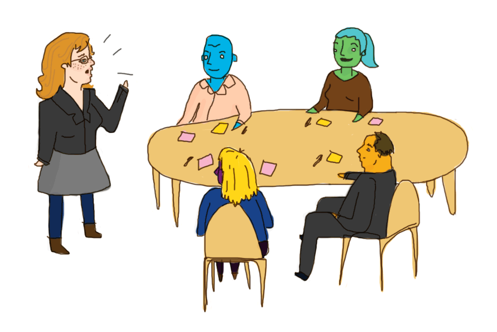
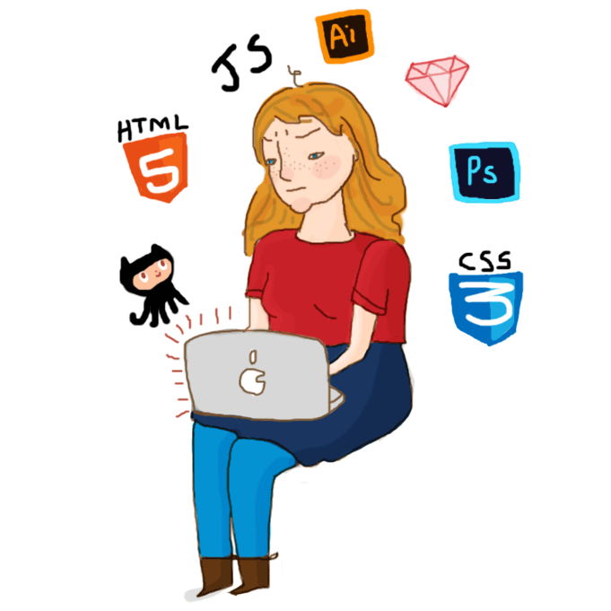

My name is Merrin Macleod. I'm a good person and I'm looking for work.
I'm a designer and developer living in Wellington, New Zealand. This October, I'm looking for a job.
I'd prefer to stay in Wellington, but relocating isn't out of the question.
I want to create technology that makes the world a little better for humans.
In particular I'm interested in improving public knowledge, diversity in powerful groups, and somehow addressing the very bleak existential threat of climate change.
I want to improve the tech community.
I believe that an inclusive tech community is vital to improving the technology we create.
I'm heavily involved with the Ruby community. I organise Rails Girls in Wellington, coached in Auckland, and I sit on the inaugural Ruby New Zealand committee.
I'm a member of InternetNZ, and I hosted a session at NetHui this year.
I coached at the Summer of Tech Hackathon a few months ago. Last year I spoke on integrating design and development in the Summer of Tech seminar series.
I like open source.
Most recently I contributed to AskAway for the initial build in last year's Wellington mayoral elections and the rebuild for the general election this year. Through this I've become involved with Code for New Zealand.
My skills are in design, development, and writing.
Design

Types of design I have experience with:
- User experience design
- Brand identity creation
- Illustration
- Photography
User experience design is the field where I have the most opinions and experience.
If everything that impacts on user experience is a design decision, that means that user experience design has to be involved with development, business analysis, and anything that affects the context in which a service is used.
I see user experience design as a collaborative endeavour, building shared understanding amongst everyone who makes design decisions. It involves user research and testing, and it involves bringing together different parts of the team who build a product.
The visible part includes creating user personas, journeys and prototypes. The bulk of the work involved with getting those artifacts right is talking to people, understanding and negotiating user and business needs, and communicating with everyone who has impacts on the user experience.
I've spent the last two years at Rabid creating and practising a user experience design process that works for building web and mobile apps for clients. I've run workshops, made prototypes from paper to code, and run usability testing sessions with end users. I've improved the understanding of end users from business analysis to development, and have guided development to build products that are good for people.
I enjoy illustration, primarily as a hobby. I drew all of the pictures on this website with a trackpad and Photoshop. I've designed T-shirts for two consecutive NZ Rails Camps.
I use a Canon 60D and I've had my photography and videography used for Rabid, PledgeMe, the Campaign for Marriage Equality. It's a field I'd like to expand my skills in. I have Flickr.
I will also complete a Design Innovation degree from Victoria University of Wellington in 2015.
Development

I have experience with the following technologies and methodologies:
- HTML and CSS (and HAML and Handlebars and SASS)
- Javascript and JQuery
- Ruby and Ruby based web frameworks - Rails, Sinatra, Jekyll
- Agile development
I write nice, maintainable front-end code bases with object-oriented CSS and semantic HTML5 markup, often using SASS as a pre-processor. I've also used Bootstrap extensively.HTML and CSS can be a powerful design tool, and for web apps I advocate a workflow of creating modular style guides rather than building page-by-page high-fidelity designs. Good CSS architecture can be reflected in a consistent experience that is easier to use and less painful to maintain.
I am somewhat of an intrepid beginner at Javascript. I'm comfortable with JQuery. I go to wellington.js a lot and look at other people using Javascript.
My focus is on the front end of the web, but I'm perfectly capable of building and contributing to Rails, Sinatra or Jekyll apps.
During my time at Rabid we improved the way we use agile methodologies to be more in line with Scrum, while keeping in mind the flexibility involved with the Agile manifesto. To integrate design with development we used tools from Lean UX.
Writing
I enjoy English.
- Business writing
- Web and social media
- Haiku
I've spent part of my time at Rabid involved with the process of writing proposals and other business documents. I ensure writing is clear, using specialised terms where necessary but avoiding jargon.
I also contributed to writing several internal documents for Rabid, such as policies, communication guidelines, and brand values.
I contributed heavily to the copy currently on the Rabid website, and I co-managed social media accounts for the Campaign for Marriage Equality in the lead-up to the 2012 vote on the issue.
Here ends this CV.
Lines may remain yet unclicked.
Let's work together.